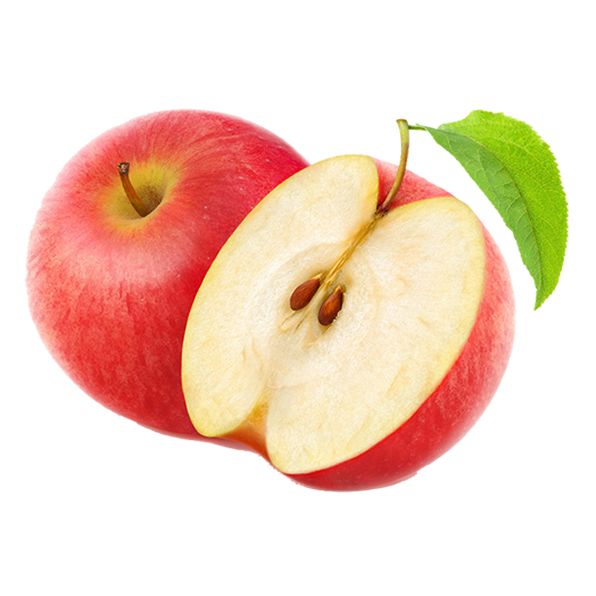
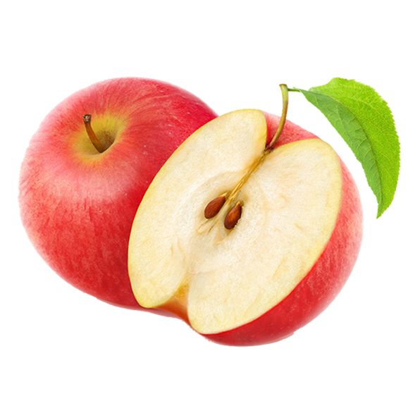

home
Unusual Fruits
Fruits you've probably never heard of

fruit so juicy

Buddha's Hand
This citrus fruit is found in China, India, and Japan. The fruit is more sweet than sour, and can be candied, distilled, or used in place of lemon zest in most recipes.

Durian
This south Asian fruit is spiky on the outside, soft and custardy on the inside, and infamous for its terrible smell (it’s banned in many public places in Singapore).

Star Apple
The Star Apple is almost too pretty to eat. It typically has a sweet, milky white pulp and its seeds make a starlike pattern in the fruit’s centre.

Longan
Also known as Dragon's Eye, this small juicy fruit is often eaten in China, and is a common ingredient in meals.
- Apples
- Oranges
- Pears
- Bananas
- Grapes
- Kiwi
| fruit sales |
jan |
feb |
march |
| Apples |
304 |
202 |
239 |
| Oranges |
302 |
394 |
848 |
| Pears |
939 |
833 |
873 |
| Bananas |
843 |
783 |
383 |
| Grapes |
844 |
878 |
674 |
| Kiwi |
546 |
457 |
599 |
go to home


 
